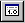

Select Automatically Open Disassembly on the Window menu to cause the Disassembly window to open every time WinDbg begins a debugging session.
If you clear this command, you can still open the Disassembly window by clicking Disassembly on the View menu, pressing ALT+7, or clicking the Disassembly (Alt+F7) button (

) on the toolbar.